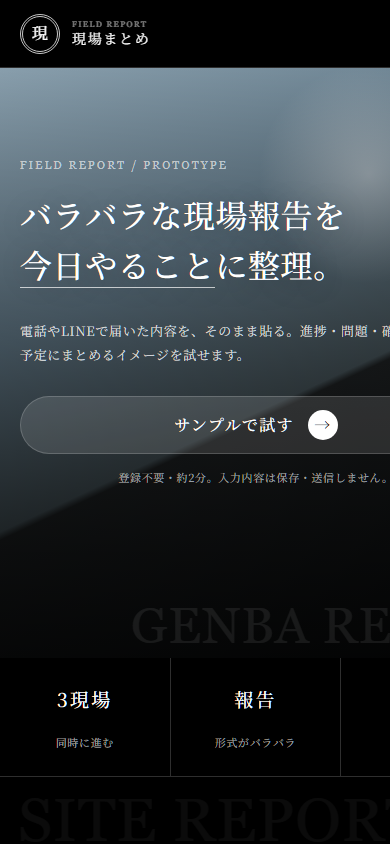
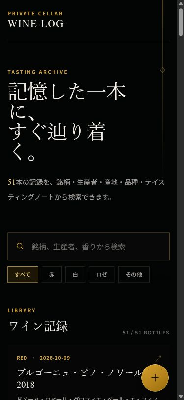

LESS, THEN BETTER.
減らす発想で
人生の質を上げる


相談はこちら
横にスワイプして制作サンプルを見る →

HP制作サンプル
Wine Log by Tatsuya
実飲記録と、予想が外れた学びをまとめた初心者向けワインサイト。
サイトを見る ↗COMMON FRICTION
悩みを抱えていませんか？
日々の確認や伝達の手間に、心当たりはありますか。
悩みの例を見る
顧客単位の予約、商材、フォローアップが大変
緊急の雑務に追われ、重要なタスクが後回しになる
ベテランの技術が言語化されず継承できない
アイディアがあるが漠然で具体的な形にできない
WHAT Quant Log DOES
Quant Logのメリット
手間を整理し、大切な仕事に使える時間を増やします。
メリットを詳しく見る
ベテランの技術を仕事マニュアルにする
繰り返しはAI、人間は仕事の最前線へ
一般的な制作代行ではなくTatsuya独自のアイディアを提案します
FIRST OFFER
初回限定プラン
※Webアプリ制作のみ
初回限定 20,000円
プラン内容を見る
相談、診断無料（30-60分）
困り事、悩みをヒアリングし課題の方向性を一緒に考えます
成果物納品 20,000円（通常価格の60％ OFF）
診断結果に基づき、Tatsuyaの発想を取り入れた成果物を作ります
修正対応 無制限
ただし当初の相談範囲内の調整に限ります 大幅な機能追加、仕様変更は別途ご相談となります。具体的なご指摘に基づき、納得いただけるまで丁寧に修正します
SERVICE & PRICE
サービス内容と料金
HP・WebサイトとWebアプリを制作します。
HP制作 100,000円から ／ Webアプリ制作 初回 20,000円
サービスと料金を見る
HP／Webサイト制作
100,000円から
Webアプリ制作
初回限定価格 20,000円
通常価格 50,000円
PAYMENT
支払方法
クレジットカード
現金
FAQ
よくあるご質問
ベテランの技術を仕事マニュアルにする
作業の順番、判断基準、失敗例など、ベテランの頭の中にある技術を聞き取ります。写真と短い言葉で整理し、現場で見返せて次の人へ渡せる仕事マニュアルにします。
繰り返しはAI、人間は仕事の最前線へ
転記、確認、集計などの繰り返し業務は、AIや小さなアプリへ任せます。人間は顧客対応、判断、改善、創意工夫など、その仕事の価値を生む最前線に集中できる形をつくります。
どんな困りごとを扱いますか？
何度も繰り返す確認、伝達漏れ、思い出す負担、情報の散らばりなど、日常や仕事に残る小さな手間を扱います。
必ずアプリを作るのですか？
いいえ。最初に困りごとを整理し、文章、一覧表、手作業を含め、最も小さく負担を減らせる方法から考えます。
公開されているアプリは完成品ですか？
掲載しているものは、具体的な利用場面を確認するために小さく形にしたサンプルです。
CONTACT
必要事項を入力すると、メールアプリにお問い合わせ内容を引き継ぎます。
PHILOSOPHY
制作の考え方
理念はAIドクター。私たちの課題を診断し、適切な処置を検討する。そのうえで足すのではなく引く思想で解決するサポートを提供します。

Profile
Quant Log 運営者
2018年より自己資金で為替取引スタート 2021年 証券外務員試験合格 2025年 口座残高ベースで、+170％以上の増加を実現 仮説／検証／改善スタイル確立 2026年 為替取引を引退
2026年より副業家向けコンテンツ配信サービス開始 AIを活用し、HP・Webアプリ制作、データ分析を行う 現在は為替取引で確立した仮説／検証／改善スタイルを法人・個人向けサービスに活用 「手間を減らし、人生の質を上げる」サービスを提供している 好きなことは美味しいものを心ゆくまで味わうこと